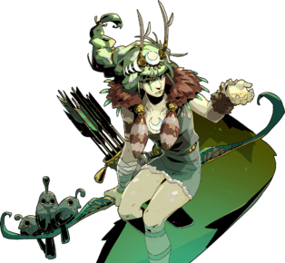

Characters
There are many characters in Hades to meet and get to know. Each one gives you different benefits. The ones that help you "directly" during your adventure through Hades are the olympians. They offer boons to that help you travel throgh the underworld. There other characters that offer temporary boons or improves Zagreus in some way.
Olympians
Besides the olmpians there are the Cthonic Gods and othe important charachters from Greek mythology. A way to get items that you can use in every run is by forming a bond with these characters. Each item represents the characters in some way. You get these items by gifting these characters Nectar,but the Olympians also offer temporary boons that can be granted randomly
Zeus

His boons allow attacks to deal damage to multiple enemies.The status ailment his boon causes is "Jolted". The victims next attack causes it to inflict damage on itself and other enemies around it.
Aphrodite
Her boons let Zagreus give his enemies a speed debuff. The status ailment her boons cause "Weak". The victims attacks do less damage.
Poseidon

His boons give weapons the ability to knock back enemies. The status ailment his boon causes is "Ruptured". The victim will take rapid damage everytime they move.
Ares
His boons increase Zagreus’s ability damage as well as deals enemies damage over time. The status ailment his boon causes is "Doom". When affected the victim will eventually take damage.
Hermes

His boons buffs Zagreus’s speed in different ways (i.e., movement and/or attack). Hermes is the only Olympian that do not curse the enemy. His boons are strictly buffs for Zagreus.
Athena

Her boons provide Zagreus with opportunities to deflect an enemy’s attacks. The status ailment her boon causes is "Exposed". The victim takes more damge when struck from behind.
Dionysus
His boons poisons enemies or increase Zagreus’s health over time. The status ailment his boon causes is "Hangover". The victim takes damage everty half second, and this ailment can be stacked up to five times.
Artemis
Her boons boost the chance for Zagreus to land critical damage on his enemies. The status ailment her boon causes is "Marked". The victim has a higher chance of taking critical damage from one attack.
For more charachter information: https://hades.fandom.com/wiki/Characters